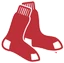

Historical player · LF
Billy Hatcher
- Position
- LF
- Bats/Throws
- R/R
- Height/Weight
- 5'9", 175 lb
- Born
- Oct 4, 1960 in Williams, CA
- Major-league seasons
- 1984–1995 (12)
- Main franchise
 Houston Astros
Houston Astros- Status
- Retired
| Year | Team | Lg | G | PA | AB | R | H | 2B | 3B | HR | RBI | SB | CS | BB | K | AVG | OBP | SLG | OPS | WAR |
|---|---|---|---|---|---|---|---|---|---|---|---|---|---|---|---|---|---|---|---|---|
| 1984 |  Chicago Cubs Chicago Cubs | NL | 8 | 10 | 9 | 1 | 1 | 0 | 0 | 0 | 0 | 2 | 0 | 1 | 0 | .111 | .200 | .111 | .311 | -0.1 |
| 1985 | Chicago Cubs | NL | 53 | 178 | 163 | 24 | 40 | 12 | 1 | 2 | 10 | 2 | 4 | 8 | 12 | .245 | .290 | .368 | .658 | 0.2 |
| 1986 | Houston Astros | NL | 127 | 453 | 419 | 55 | 108 | 15 | 4 | 6 | 36 | 38 | 14 | 22 | 52 | .258 | .302 | .356 | .658 | 1.0 |
| 1987 | Houston Astros | NL | 141 | 627 | 564 | 96 | 167 | 28 | 3 | 11 | 63 | 53 | 9 | 42 | 70 | .296 | .352 | .415 | .767 | 3.5 |
| 1988 | Houston Astros | NL | 145 | 591 | 530 | 79 | 142 | 25 | 4 | 7 | 52 | 32 | 13 | 37 | 56 | .268 | .321 | .370 | .691 | 2.3 |
| 1989 | Houston Astros | NL | 108 | 433 | 395 | 49 | 90 | 15 | 3 | 3 | 44 | 22 | 6 | 30 | 53 | .228 | .281 | .304 | .585 | 0.4 |
| 1989 | Pittsburgh Pirates | NL | 27 | 87 | 86 | 10 | 21 | 4 | 0 | 1 | 7 | 2 | 1 | 0 | 9 | .244 | .253 | .326 | .578 | 0.0 |
| 1989 total | 135 | 520 | 481 | 59 | 111 | 19 | 3 | 4 | 51 | 24 | 7 | 30 | 62 | .231 | .277 | .308 | .584 | 0.3 | ||
| 1990 |  Cincinnati Reds Cincinnati Reds | NL | 139 | 545 | 504 | 68 | 139 | 28 | 5 | 5 | 25 | 30 | 10 | 33 | 42 | .276 | .327 | .381 | .708 | 2.1 |
| 1991 | Cincinnati Reds | NL | 138 | 482 | 442 | 45 | 116 | 25 | 3 | 4 | 41 | 11 | 9 | 26 | 55 | .262 | .312 | .360 | .671 | 1.0 |
| 1992 | Cincinnati Reds | NL | 43 | 102 | 94 | 10 | 27 | 3 | 0 | 2 | 10 | 0 | 2 | 5 | 11 | .287 | .314 | .383 | .697 | 0.3 |
| 1992 |  Boston Red Sox | AL | 75 | 342 | 315 | 37 | 75 | 16 | 2 | 1 | 23 | 4 | 6 | 17 | 41 | .238 | .283 | .311 | .594 | -0.5 |
| 1992 total | 118 | 444 | 409 | 47 | 102 | 19 | 2 | 3 | 33 | 4 | 8 | 22 | 52 | .249 | .290 | .328 | .618 | -0.3 | ||
| 1993 | Boston Red Sox | AL | 136 | 562 | 508 | 71 | 146 | 24 | 3 | 9 | 57 | 14 | 7 | 28 | 46 | .287 | .336 | .400 | .735 | 1.6 |
| 1994 | Boston Red Sox | AL | 44 | 181 | 164 | 24 | 40 | 9 | 1 | 1 | 18 | 4 | 5 | 11 | 14 | .244 | .292 | .329 | .621 | -0.5 |
| 1994 | Philadelphia Phillies | NL | 43 | 146 | 134 | 15 | 33 | 5 | 1 | 2 | 13 | 4 | 1 | 6 | 14 | .246 | .271 | .343 | .614 | -0.2 |
| 1994 total | 87 | 327 | 298 | 39 | 73 | 14 | 2 | 3 | 31 | 8 | 6 | 17 | 28 | .245 | .283 | .336 | .618 | -0.8 | ||
| 1995 | Texas Rangers | AL | 6 | 13 | 12 | 2 | 1 | 1 | 0 | 0 | 0 | 0 | 0 | 1 | 1 | .083 | .154 | .167 | .321 | -0.2 |
| Career | 12 seasons | 1233 | 4752 | 4339 | 586 | 1146 | 210 | 30 | 54 | 399 | 218 | 87 | 267 | 476 | .264 | .312 | .364 | .676 | 10.7 |
| Year | Team | Pos | G | GS | Inn | TC | PO | A | E | DP | Fld% |
|---|---|---|---|---|---|---|---|---|---|---|---|
| 1984 | Chicago Cubs | LF | 4 | 1 | 16.0 | 5 | 4 | 1 | 0 | 0 | 1.000 |
| 1985 | Chicago Cubs | LF | 16 | 10 | 93.0 | 20 | 19 | 1 | 0 | 0 | 1.000 |
| 1985 | Chicago Cubs | CF | 27 | 25 | 229.0 | 58 | 56 | 1 | 1 | 0 | .983 |
| 1986 | Houston Astros | LF | 39 | 7 | 117.0 | 25 | 24 | 1 | 0 | 0 | 1.000 |
| 1986 | Houston Astros | CF | 95 | 88 | 761.0 | 202 | 192 | 6 | 4 | 0 | .980 |
| 1987 | Houston Astros | LF | 51 | 42 | 363.0 | 85 | 79 | 6 | 0 | 1 | 1.000 |
| 1987 | Houston Astros | CF | 94 | 93 | 794.0 | 201 | 188 | 9 | 4 | 5 | .980 |
| 1987 | Houston Astros | RF | 6 | 4 | 37.1 | 10 | 10 | 0 | 0 | 0 | 1.000 |
| 1988 | Houston Astros | LF | 124 | 115 | 1027.0 | 244 | 234 | 6 | 4 | 2 | .984 |
| 1988 | Houston Astros | CF | 25 | 18 | 186.0 | 45 | 44 | 0 | 1 | 0 | .978 |
| 1989 | Houston Astros | LF | 96 | 83 | 781.0 | 202 | 199 | 1 | 2 | 1 | .990 |
| 1989 | Pittsburgh Pirates | LF | 2 | 1 | 11.0 | 1 | 1 | 0 | 0 | 0 | 1.000 |
| 1989 | Houston Astros | CF | 11 | 10 | 76.0 | 25 | 25 | 0 | 0 | 0 | 1.000 |
| 1989 | Pittsburgh Pirates | CF | 10 | 10 | 83.0 | 15 | 15 | 0 | 0 | 0 | 1.000 |
| 1989 | Pittsburgh Pirates | RF | 9 | 8 | 66.0 | 10 | 10 | 0 | 0 | 0 | 1.000 |
| 1990 | Cincinnati Reds | LF | 76 | 54 | 525.0 | 143 | 136 | 6 | 1 | 1 | .993 |
| 1990 | Cincinnati Reds | CF | 69 | 65 | 555.0 | 177 | 173 | 4 | 0 | 1 | 1.000 |
| 1991 | Cincinnati Reds | LF | 83 | 59 | 554.0 | 138 | 132 | 4 | 2 | 0 | .986 |
| 1991 | Cincinnati Reds | CF | 53 | 46 | 394.0 | 120 | 117 | 0 | 3 | 0 | .975 |
| 1992 | Cincinnati Reds | LF | 23 | 20 | 156.0 | 30 | 29 | 0 | 1 | 0 | .967 |
| 1992 | Boston Red Sox | LF | 63 | 62 | 546.0 | 125 | 116 | 5 | 4 | 0 | .968 |
| 1992 | Boston Red Sox | CF | 13 | 12 | 106.0 | 30 | 29 | 0 | 1 | 0 | .967 |
| 1993 | Boston Red Sox | 2B | 2 | 0 | 4.0 | 0 | 0 | 0 | 0 | 0 | - |
| 1993 | Boston Red Sox | CF | 129 | 125 | 1097.0 | 287 | 279 | 6 | 2 | 2 | .993 |
| 1994 | Philadelphia Phillies | LF | 7 | 1 | 24.0 | 11 | 10 | 1 | 0 | 0 | 1.000 |
| 1994 | Philadelphia Phillies | CF | 26 | 19 | 179.0 | 41 | 38 | 3 | 0 | 0 | 1.000 |
| 1994 | Philadelphia Phillies | RF | 11 | 10 | 72.1 | 20 | 20 | 0 | 0 | 0 | 1.000 |
| 1994 | Boston Red Sox | RF | 43 | 41 | 364.0 | 94 | 88 | 3 | 3 | 1 | .968 |
| 1995 | Texas Rangers | LF | 1 | 1 | 6.0 | 1 | 1 | 0 | 0 | 0 | 1.000 |
| 1995 | Texas Rangers | RF | 4 | 3 | 27.0 | 9 | 8 | 1 | 0 | 0 | 1.000 |
| Career | LF | 585 | 456 | 4219.0 | 1030 | 984 | 32 | 14 | 5 | .986 | |
| Career | CF | 552 | 511 | 4460.0 | 1201 | 1156 | 29 | 16 | 8 | .987 | |
| Career | RF | 73 | 66 | 566.2 | 143 | 136 | 4 | 3 | 1 | .979 | |
| Career | 2B | 2 | 0 | 4.0 | 0 | 0 | 0 | 0 | 0 | - |
League-leader finishes top 10; 0 times first
Seasons before 2002 are real MLB history from the OOTP export, mapped by OOTP onto this league's 30 original franchises (club names are as they were in that season). 2002 is this universe. Player names are as the export stores them (apart from a few Alexander has renamed in his game since this dump, such as Babe Ruth): OOTP gives some historical players generated names (the 586-homer career is filed under “Legendre Robinson”), and the site keeps them. Every player links to a page: 2002 players to their season pages, everyone else to a historical career page.